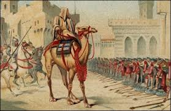
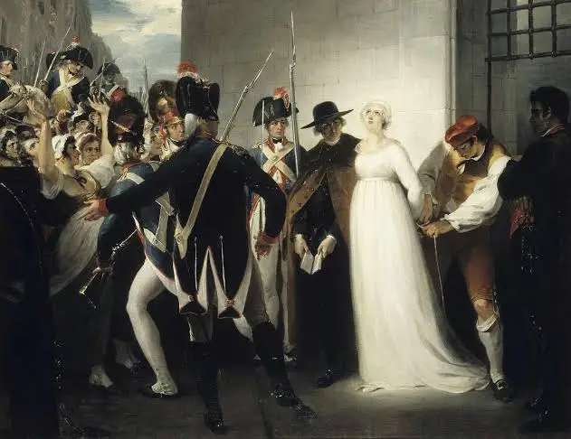

Maqam / Section
تاريخ
History
The past is never finished. It is always being rewritten, reread, and reclaimed. At Maqam, we believe history is not a museum — it is a conversation that never ended.
تاريخ
The past is never finished. It is always being rewritten, reread, and reclaimed. At Maqam, we believe history is not a museum — it is a conversation that never ended.

History · Essay · Issue I
Humanity has a habit of destroying its own memory. From the Library of Alexandria to the manuscripts of Timbuktu and the archives of Mosul, we keep burning what we cannot understand. What survives — and what does its survival mean?
Read Essay →Essay
Essay
Essay
Narrative
History at Maqam does not belong to one civilization. It belongs to the full human record — Arab, African, European, and everything in between and beyond.
From Baghdad to Cordoba, the Arab world was the intellectual center of the planet. Medicine, mathematics, astronomy, philosophy — all flourished while Europe slept. We write about this era not with nostalgia, but with questions.

The French Revolution promised liberty, equality, and fraternity — but for whom? The history of the modern West is the history of a promise made to everyone and kept for some. We examine the gap between the ideal and the reality.
Colonialism, independence, Cold War, identity. The 20th century remade the Arab world and left wounds that are still open. At Maqam, we believe understanding this century is the only way to understand the present.
"The most dangerous thing a people can do is forget their own history. The second most dangerous thing is to remember it wrong."
الأمم التي تنسى تاريخها محكوم عليها بتكراره.
Maqam Editorial · Issue I
Essay
When Europe lived in darkness, one city burned with light. A portrait of the greatest metropolis of the medieval world and what its collapse still teaches us.
Essay
Millions of documents from North Africa and the Arab world sit in French archives in Paris. What does it mean to have your own history held hostage abroad?
Essay
The Mongol sack of Baghdad in 1258 ended the Islamic Golden Age in a single week. How do civilizations collapse — and do they ever see it coming?
Narrative
She lived through independence. The textbooks say one thing. Her hands say another. On the gap between official history and lived memory.
Essay
From Alexandria to Mosul, humanity has a long history of destroying its own memory. What does it mean to burn a library — and what always survives?
Essay
Before Islam, before Rome, before even Carthage — the land now called Tunisia was already ancient. A meditation on the deep time of a place most people think they know.